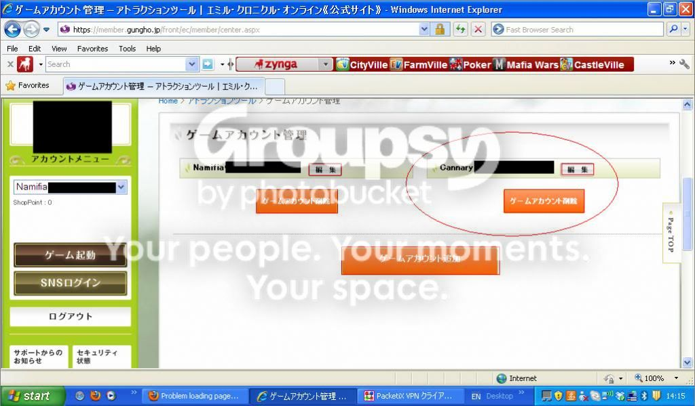
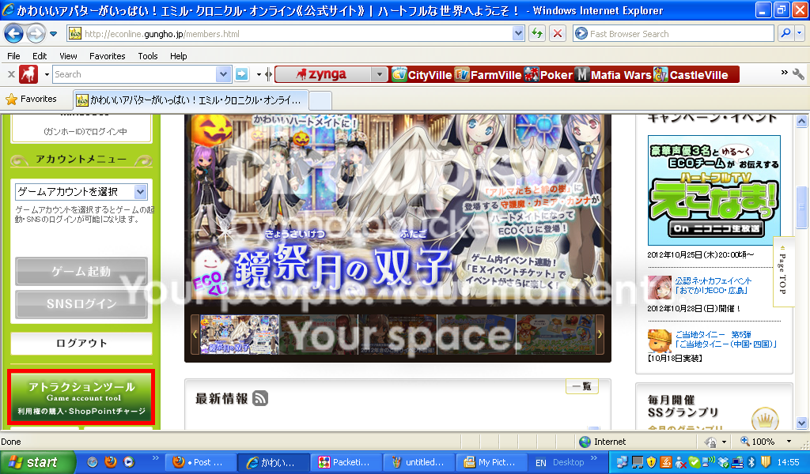
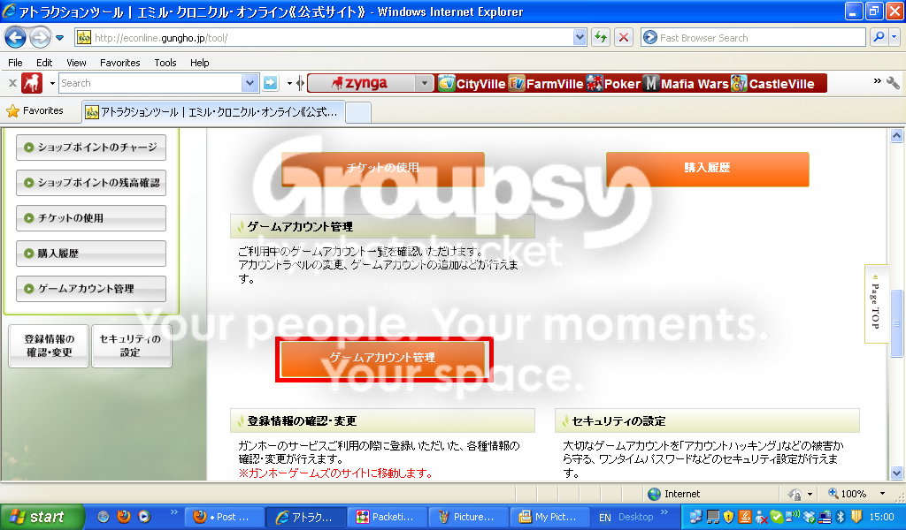
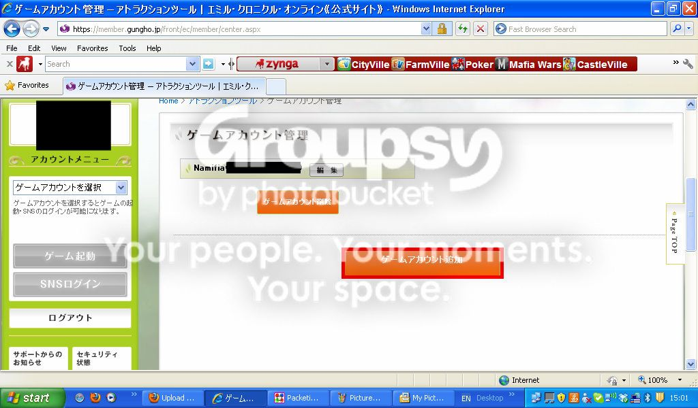
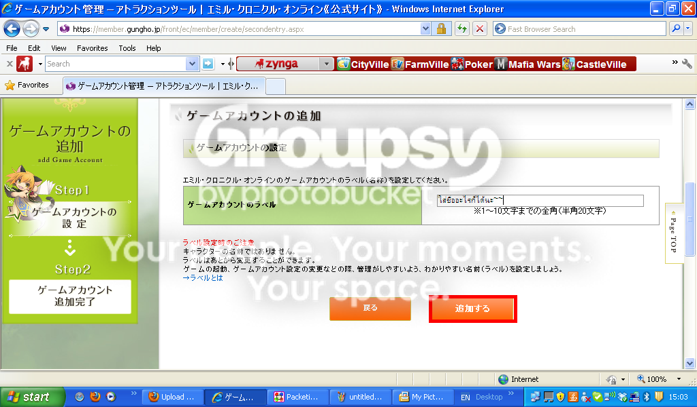
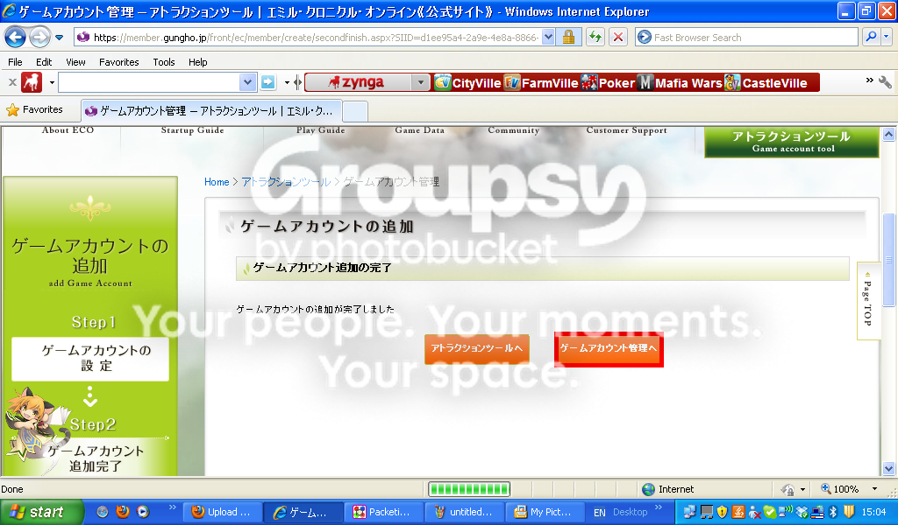

[JP] วิธีการเพิ่ม Account ในไอดี
วันนี้ลองไปจิ้มมั่วๆ ในหน้าเว็ปของพี่ยุ่น ปรากฏว่า...
Account งอกขึ้นมาอีก 1 (งงเบยล่ะสิ
(งงเบยล่ะสิ  )
)
วันนี้เลยจะขอนำวิธีเพิ่ม Account มาแชร์กันนะคะ
เริ่มจาก...
เห็นในกรอบแดงๆ นั่นไม๊ จิ้มเม้าส์เข้าไปแร๊ยยย... ย
จะโผล่มาหน้านี้ต่อ
จิ้มข้อนี้ต่อไปเลย
จิ้มต่อไป (ระวังนะ อันที่อยู่ใต้ชื้อ Account คือคำสั่งลบ Account นั้นทิ้งน่ิอ) พอถึงตรงนี้ก็คิดชื่อ Account ใหม่ให้ดีด้วยนะ
แล้วจิ้มต่อ แล้วพี่ยุ่นจะสร้าง Account ใหม่ให้เอากลับไปเชยชม
อันนี้ แนะนำให้จิ้มสี่เหลี่ยมขวานะ (ถ้าจิ้มสี่เหลี่ยมซ้ายจะกลับไปไกลเชียว)
::EDIT::
แก้ไขรูปนิดๆ หน่อยๆ

Account งอกขึ้นมาอีก 1
(งงเบยล่ะสิ )วันนี้เลยจะขอนำวิธีเพิ่ม Account มาแชร์กันนะคะ
เริ่มจาก...

เห็นในกรอบแดงๆ นั่นไม๊ จิ้มเม้าส์เข้าไปแร๊ยยย... ย
จะโผล่มาหน้านี้ต่อ

จิ้มข้อนี้ต่อไปเลย

จิ้มต่อไป (ระวังนะ อันที่อยู่ใต้ชื้อ Account คือคำสั่งลบ Account นั้นทิ้งน่ิอ) พอถึงตรงนี้ก็คิดชื่อ Account ใหม่ให้ดีด้วยนะ

แล้วจิ้มต่อ แล้วพี่ยุ่นจะสร้าง Account ใหม่ให้เอากลับไปเชยชม

อันนี้ แนะนำให้จิ้มสี่เหลี่ยมขวานะ (ถ้าจิ้มสี่เหลี่ยมซ้ายจะกลับไปไกลเชียว)
::EDIT::
แก้ไขรูปนิดๆ หน่อยๆ